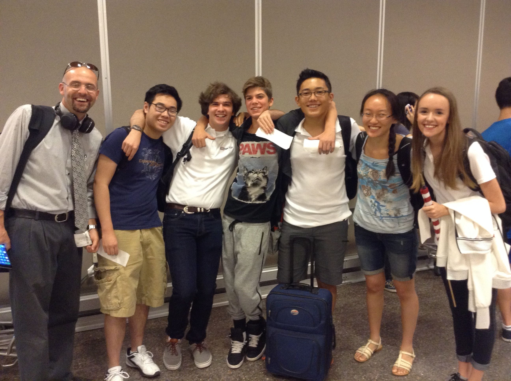

Alexei Garcia and my partner Jeff Worley at the 2016 TSA National Conference / 1st place Computer Numerical Control Production
Me working on Skyline's competitive VEX robot at the Granite Technical Institute open house.

Skyline High School Nationals TSA team 2015
Alexei Garcia
Technology Student Association (TSA) has a special place in my heart as my favorite extracurricular activity. I joined TSA in 2012, co-founded TSA at Skyline High School, and served as Skyline Treasurer from 2014-2016, Skyline President from 2016-2017, and Utah state historian from 2015-2016.
I competed at the 2013, 2014, 2015, and 2016 Utah state conferences. I also competed at the 2014, 2015, and 2016 TSA national conferences in Washington D.C., Dallas, and Nashville respectively.
2013: 2nd Transportation Technology
2014: 1st Environmental Focus
2014: 1st Construction Challenge
2014: 1st Community Service Video
2014: 2nd VEX Robotics
2014: 3rd Go Green Manufacturing
2014: 3rd Problem Solving
2014 TSA National Conference: 4th Community Service Video
2014 TSA National Conference: 4th Go Green Manufacturing
2014 TSA National Conference: 5th Driver SKills VEX Robotics
2014 TSA National Conference: 8th VEX Robotics
2014 TSA National Conference: 8th Environmental Focus
2016: 1st Debating Technology Issues
2016: 1st Computer Numerical Control (CNC) Production
2016: 1st Webmaster
2016 TSA National Conference: 1st Computer Numerical Control (CNC) Production